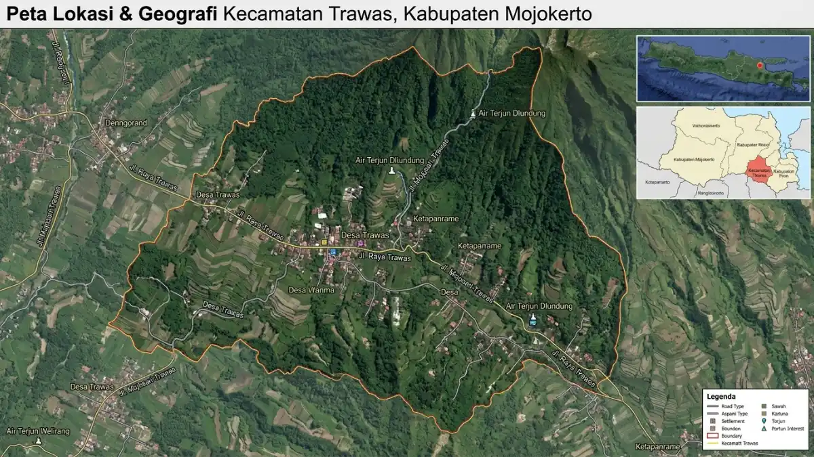

Ilustrasi kegiatan peserta di tempat outbound yang ada paintball di daerah Trawas.
Ilustrasi kegiatan peserta di tempat outbound yang ada paintball di daerah Trawas.
Tempat outbound yang ada paintball di daerah Trawas, Mojokerto, tersedia di resort, hutan pinus, dan area wisata alam dengan arena perang cat bagi kelompok.
- Apa itu tempat outbound yang ada paintball di daerah Trawas?
- Di mana lokasi Trawas dan seberapa mudah dijangkau?
- Berapa harga outbound plus paintball di Trawas pada 2026?
- Mengapa Trawas cocok untuk outbound dengan paintball?
- Bagaimana cara kerja paket outbound paintball di Trawas?
- Siapa yang cocok memakai paket paintball di Trawas dan apa batasannya?
- Faktor apa yang perlu dipertimbangkan saat memilih tempat outbound paintball di Trawas?
- Apa perbedaan outbound paintball di Trawas dan di Pacet?
- Apa kesalahan umum saat memesan outbound paintball di Trawas?
- Apa tips agar outbound paintball di Trawas berjalan lancar?
- Kesimpulan
- FAQ
Apa itu tempat outbound yang ada paintball di daerah Trawas?
Tempat outbound dengan paintball di Trawas adalah venue wisata atau resort di Kecamatan Trawas yang menyediakan arena perang cat beserta permainan kelompok untuk kegiatan gathering.
Paintball adalah permainan simulasi pertempuran yang memakai marker berpeluru cat. Peserta dibagi menjadi beberapa tim, lalu menjalankan skenario seperti merebut bendera atau bertahan di markas.
Di Trawas, arena biasanya memanfaatkan kontur berbukit, pepohonan rindang, dan bangunan penghalang buatan.
Kegiatan ini hampir selalu dijual sebagai bagian dari paket outbound. Isinya dapat mencakup ice breaking, fun games, permainan kerja sama tim, sesi paintball, makan siang, dan dokumentasi.
Venue tempat kegiatan dapat berupa resort, hutan pinus, kawasan air terjun, atau lahan outbound milik vendor. Lokasi pastinya bergantung pada operator yang dipilih.
Di mana lokasi Trawas dan seberapa mudah dijangkau?
Trawas adalah kecamatan pegunungan di Kabupaten Mojokerto, Jawa Timur, yang berjarak sekitar 1,5 jam dari Surabaya, sekitar 1 jam dari Sidoarjo, dan sekitar 45 menit dari Mojokerto kota.
Menurut publikasi BPS Kabupaten Mojokerto, Kabupaten Mojokerto Dalam Angka 2026, luas wilayah Kecamatan Trawas sekitar 58 kilometer persegi dengan jumlah penduduk sekitar 32 ribu jiwa.
Angka ini menunjukkan bahwa Trawas adalah kawasan berpenduduk relatif kecil, sehingga suasananya jauh lebih tenang dibanding kota.
Informasi jarak tempuh tersebut bersumber dari keterangan penyedia paket wisata dan outbound pada 2026, dan waktu perjalanan dapat berubah menurut kepadatan lalu lintas serta hari keberangkatan.
Trawas berdekatan dengan Pacet dan Tretes, yang juga dikenal sebagai kawasan sejuk. Kedekatan itu membuat banyak vendor melayani ketiga area tersebut dalam satu paket.

Ilustrasi peta lokasi Trawas di wilayah Mojokerto, Jawa Timur yang mudah dijangkau dari berbagai kota besar sekitarnya.Berapa harga outbound plus paintball di Trawas pada 2026?
Paket team building plus paintball di kawasan Trawas dan Pacet pada 2026 tercatat sekitar Rp 350.000 sampai Rp 435.000 per orang untuk kelompok minimal 100 peserta.
Angka tersebut berasal dari daftar harga First Outbound yang terbit pada Mei 2026. Dalam daftar yang sama, paket one day outbound tercatat mulai Rp 195.000 per orang.
Paket team building standar berada di kisaran Rp 235.000 sampai Rp 285.000, dan gathering dua hari satu malam berada di kisaran Rp 600.000 sampai Rp 850.000 per orang.
Untuk kelompok lebih kecil, sejumlah penyedia mengiklankan paket paintball saja mulai sekitar Rp 150.000 per orang dengan syarat minimal sekitar 10 peserta.
Semua angka bersifat indikatif. Harga final dapat bervariasi tergantung jumlah peserta, musim, fasilitas makan, transportasi, dan tambahan seperti rafting atau penginapan. Bahasan biaya yang lebih rinci tersedia di artikel harga paket outbound paintball di Trawas.
Mengapa Trawas cocok untuk outbound dengan paintball?
Trawas cocok untuk outbound paintball karena kontur berbukit dan area berpohon menciptakan arena alami, udaranya sejuk, dan jaraknya masih terjangkau dari kota besar Jawa Timur.
Kontur alam membuat skenario permainan lebih menantang tanpa harus membangun banyak struktur buatan.
Peserta harus berkomunikasi, menyusun strategi, dan berbagi peran. Kemampuan itulah yang biasanya ingin dilatih dalam kegiatan team building.
Manfaat lain dari kegiatan ini antara lain:
- Melepas stres kerja melalui aktivitas fisik yang menyenangkan.
- Melatih komunikasi dan pembagian peran dalam tim.
- Mencairkan hubungan antardivisi yang jarang berinteraksi.
- Memberi pengalaman bersama yang mudah diingat dan didokumentasikan.
Batasannya perlu dipahami. Paintball melibatkan lari, berjongkok, dan benturan ringan dari peluru cat, sehingga tidak semua peserta nyaman mengikutinya. Vendor yang baik menyediakan aktivitas alternatif bagi peserta yang tidak ikut bermain.
Bagaimana cara kerja paket outbound paintball di Trawas?
Paket outbound paintball di Trawas umumnya berjalan dalam satu hari: pembukaan, permainan pemanasan, briefing keselamatan, sesi paintball bertahap, makan siang, refleksi, lalu dokumentasi dan penutupan.
Alur yang lazim dimulai dari registrasi dan pembagian tim. Fasilitator kemudian memimpin ice breaking supaya peserta saling mengenal.
Sebelum sesi paintball, tim keselamatan menjelaskan aturan main, cara memegang marker, dan area terlarang.
Sesi paintball biasanya dibagi menjadi beberapa ronde dengan skenario berbeda. Setelah itu, fasilitator mengajak peserta melakukan refleksi.
Tujuannya menghubungkan pengalaman permainan dengan situasi kerja nyata, misalnya koordinasi antardivisi.
Perlengkapan yang lazim disediakan vendor meliputi seragam, masker pelindung, rompi, dan marker beserta peluru cat. Susunan waktu yang lebih rinci dibahas di artikel persiapan dan keselamatan paintball outbound di Trawas.
Siapa yang cocok memakai paket paintball di Trawas dan apa batasannya?
Paket outbound paintball di Trawas cocok bagi perusahaan, sekolah menengah, komunitas, dan organisasi dewasa muda, tetapi tidak selalu sesuai bagi peserta dengan kondisi kesehatan tertentu atau anak usia dini.
Kelompok yang paling sering memakainya adalah karyawan kantor, panitia acara, tim penjualan, serta mahasiswa.
Sekolah juga dapat memakainya bila vendor menerapkan aturan usia dan pengawasan yang jelas. Untuk anak-anak, banyak penyelenggara lebih menyarankan permainan edukatif tanpa marker.
Peserta yang memiliki riwayat cedera sendi, gangguan jantung, asma berat, atau kondisi lain yang membatasi aktivitas fisik sebaiknya berkonsultasi dengan tenaga kesehatan sebelum ikut.
Artikel ini bersifat informasi umum dan bukan nasihat medis. Panitia sebaiknya menyediakan aktivitas pengganti agar semua peserta tetap terlibat.
Faktor apa yang perlu dipertimbangkan saat memilih tempat outbound paintball di Trawas?
Faktor utama dalam memilih tempat outbound paintball di Trawas adalah keselamatan, perlengkapan pelindung, kapasitas arena, pengalaman fasilitator, rincian isi paket, dan kemudahan akses menuju lokasi.
Berikut parameter penilaian yang sebaiknya dicek:
- Keselamatan: ketersediaan briefing, wasit lapangan, dan pertolongan pertama.
- Perlengkapan: masker pelindung wajah wajib untuk setiap peserta, plus rompi dan seragam.
- Kapasitas: jumlah peserta maksimum per sesi dan jumlah arena.
- Rincian paket: jumlah peluru cat, durasi bermain, makan, dan dokumentasi.
- Cuaca dan cadangan: rencana bila hujan turun di kawasan pegunungan.
- Legalitas dan referensi: klien sebelumnya dan sertifikasi fasilitator.
Setiap opsi punya batasan. Resort menawarkan kenyamanan tetapi biasanya lebih mahal, sedangkan lahan milik vendor lebih hemat tetapi fasilitasnya lebih sederhana. Panduan langkah demi langkah tersedia di artikel cara memilih tempat outbound paintball di Trawas.
Apa perbedaan outbound paintball di Trawas dan di Pacet?
Trawas dan Pacet sama-sama kawasan sejuk di Kabupaten Mojokerto yang menyediakan paintball, tetapi Trawas lebih dikenal dengan resort dan hutan pinus, sedangkan Pacet lebih dikenal dengan rafting dan air terjun.
Perbedaan ini bersifat umum, sebab vendor di kedua kawasan sering menjual paket gabungan. Bila panitia ingin menambah rafting, banyak penyedia menawarkan paket Trawas atau Pacet dengan harga sedikit lebih tinggi.
Sebagai gambaran, daftar harga First Outbound Mei 2026 menempatkan team building plus rafting di kisaran Rp 445.000 sampai Rp 535.000 per orang.
Bila prioritas panitia adalah suasana resort dan ruang meeting, Trawas sering menjadi pilihan. Bila panitia menginginkan aktivitas air, Pacet lebih relevan. Keputusan terbaik bergantung pada tujuan acara, anggaran, dan jumlah peserta.
Apa kesalahan umum saat memesan outbound paintball di Trawas?
Kesalahan umum saat memesan outbound paintball di Trawas adalah memilih vendor hanya karena harga termurah, tidak memeriksa isi paket, dan tidak menyiapkan rencana cadangan untuk cuaca hujan.
Kesalahan lain yang sering muncul:
- Tidak mengonfirmasi jumlah peluru cat per peserta sebelum hari acara.
- Mengabaikan peserta yang tidak bisa bermain sehingga mereka merasa tersisih.
- Memesan terlalu mepet tanggal, padahal akhir pekan dan musim liburan ramai.
- Tidak menanyakan kebijakan pembatalan dan perubahan jumlah peserta.
- Melewatkan sesi refleksi sehingga kegiatan hanya menjadi hiburan tanpa tujuan tim.
Menghindari kesalahan ini menghemat biaya sekaligus mengurangi risiko cedera dan kekecewaan peserta.
Apa tips agar outbound paintball di Trawas berjalan lancar?
Agar outbound paintball di Trawas berjalan lancar, panitia perlu memesan lebih awal, menetapkan tujuan acara, menyiapkan pakaian yang tepat, dan memastikan briefing keselamatan berlangsung sebelum permainan dimulai.
Beberapa tips praktis:
- Pesan minimal beberapa minggu sebelumnya untuk akhir pekan, dan lakukan survei lokasi bila memungkinkan.
- Anjurkan peserta memakai baju lengan panjang, celana panjang, sepatu tertutup, dan membawa pakaian ganti.
- Bawa obat pribadi, tabir surya, dan jas hujan karena cuaca pegunungan dapat berubah cepat.
- Tunjuk satu koordinator panitia untuk berkomunikasi dengan fasilitator.
- Tentukan tujuan tim, misalnya komunikasi antardivisi, agar sesi refleksi bermakna.
Kesimpulan
Tempat outbound yang ada paintball di daerah Trawas dapat dipilih dengan cara sederhana. Tentukan tujuan acara dan jumlah peserta, bandingkan rincian paket, lalu prioritaskan keselamatan di atas harga.
Pada 2026, paket team building plus paintball berada di kisaran Rp 350.000 sampai Rp 435.000 per orang untuk kelompok besar, sedangkan paintball saja bisa lebih murah untuk kelompok kecil.
FAQ — Outbound Paintball Trawas